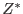

A possible and good algorithm to achieve the objective, which this task follows, is to search for the point, at which the maximum signal-to-noise (S/N) ratio is achieved for the given background time-series after the bins above a threshold are excluded.
The S/N ratio is described as
| (1) |
Let us define  as the reference threshold count per time bin,
and Exp as the exposure time for the bin.
When we use
as the exposure time for the bin.
When we use  subscripts to represent each time bin,
the above formula is rewritten as
subscripts to represent each time bin,
the above formula is rewritten as
What we here search for is the optimum , which is the background level,
with which S/N becomes the maximum. In principle it requires a minimization
(or maximization) method for search.
We assume SourceRate is constant, then we can ignore
SourceRate in comparing S/N ratios for different thresholds ():
| (4) | |||
| (5) |
If all the time bins have the same exposure, then this formula is further
simplified:
| (6) | |||
| (7) |